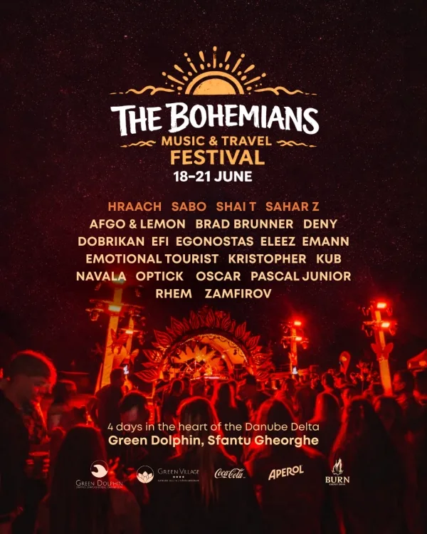

26
Jul
MVMNTS Open Air
Amfiteatrul Transilvania, Moieciu de Sus
Armen Miran · Rosario Internullo · Adrian Eftimie · Optick
Est. 2009 — Romania
Electronic music events across 30 cities. House, techno, melodic — curated since 2009.
Years
Curating underground electronic music
Venues
Across 30 Romanian cities
Artists
International and local talent
Amfiteatrul Transilvania, Moieciu de Sus
Armen Miran · Rosario Internullo · Adrian Eftimie · Optick

Crama Pandora, Cotești
Pascal Junior · Dobrikan · Paul Damixie
Artists who have performed at Cyclic events across Romania
4th Edition — June 18–21, 2026 — Sfântu Gheorghe, Danube Delta
A festival we built from scratch — electronic music, art and community in one of the most remote and beautiful corners of Romania. Four days in the Danube Delta, far from everything, close to what matters.
Launched in 2023, now at its 4th edition. The place, the music, the people — that's what mattered from day one and that hasn't changed.

Cyclic Agency was born from a passion for authentic underground music. We don't just book DJs — we build communities, curate experiences, and connect Romanian audiences with the world's finest electronic music artists.
Sound, DJ and lighting equipment rental — Void Acoustics, Pioneer CDJ-3000, schelă lumini. Full production crew for clubs, festivals and events across Romania.
Direct artist booking — local talent and international headliners.
Label management and release promotion for the underground scene.
Events in venues across Romania's most vibrant music cities.